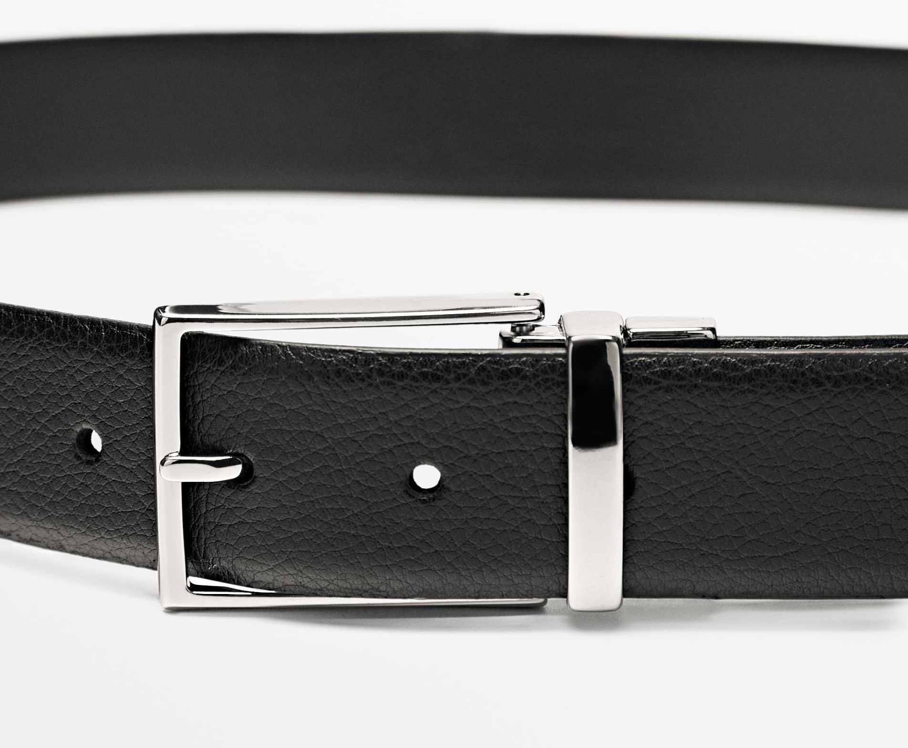

D
Dress
Anchored by → Kintentional (The Artisan)
Polished, refined, and crafted for the modern office. Dress leather goods centre on investment-quality belts and structured wallets designed to pair with softorial suits, double-breasted blazers, and high-rise tailored trousers. Hardware is understated — antique metallics and refined branding buckles replace flashy logos. Responsible Classic leathers in deep neutrals project quiet authority.





Color Palette — Dress Leathers
Jet Black
Dark Cognac
Deep Burgundy
Forest Green
Dark Plum
Belts — Dress
Classic 28–32mm width scaled for high-rise tailored trousers. Responsible Classic leather with cracked leather effects and embossed textures. Refined branding hardware in antique gold or silver finishes. Minimal visible stitching — clean edges for softorial suiting.
Wallets — Dress
Sleek, structured bifold and card-holder silhouettes. Premium leather with RFID-blocking capability. Minimal hardware — colour depth and material quality carry the story. Deep jewel tones and neutrals with subtle tonal embossing.
The Artisan → Refined Craft
Earth & Tech → Quiet Luxury
#QuietLuxury
#SoftorialSuiting
#InvestmentLeather
Antique Hardware
Embossed Texture
RFID Blocking
28–32mm Width